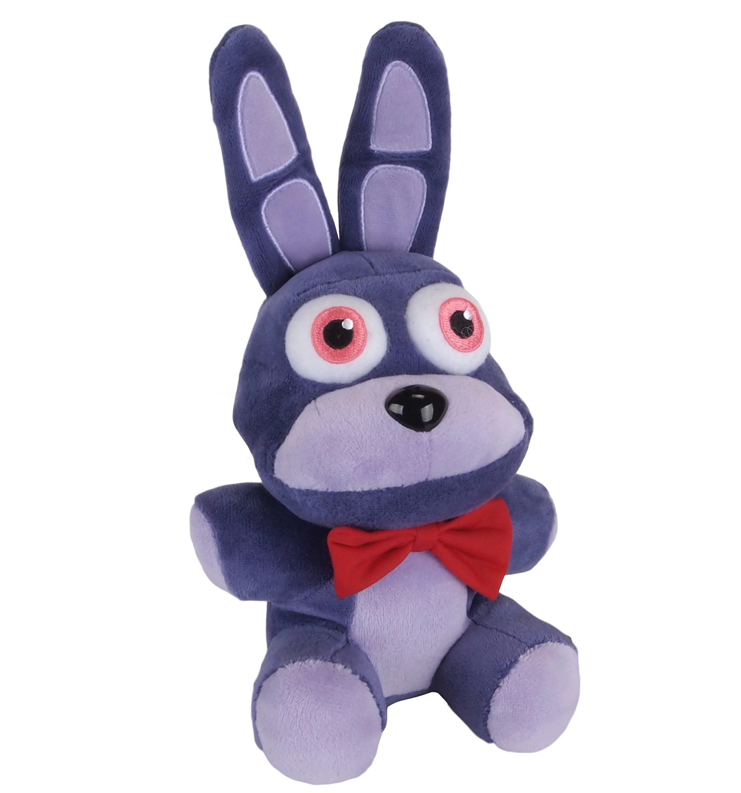
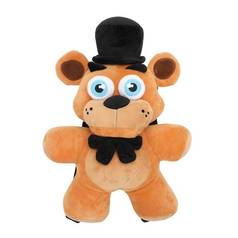
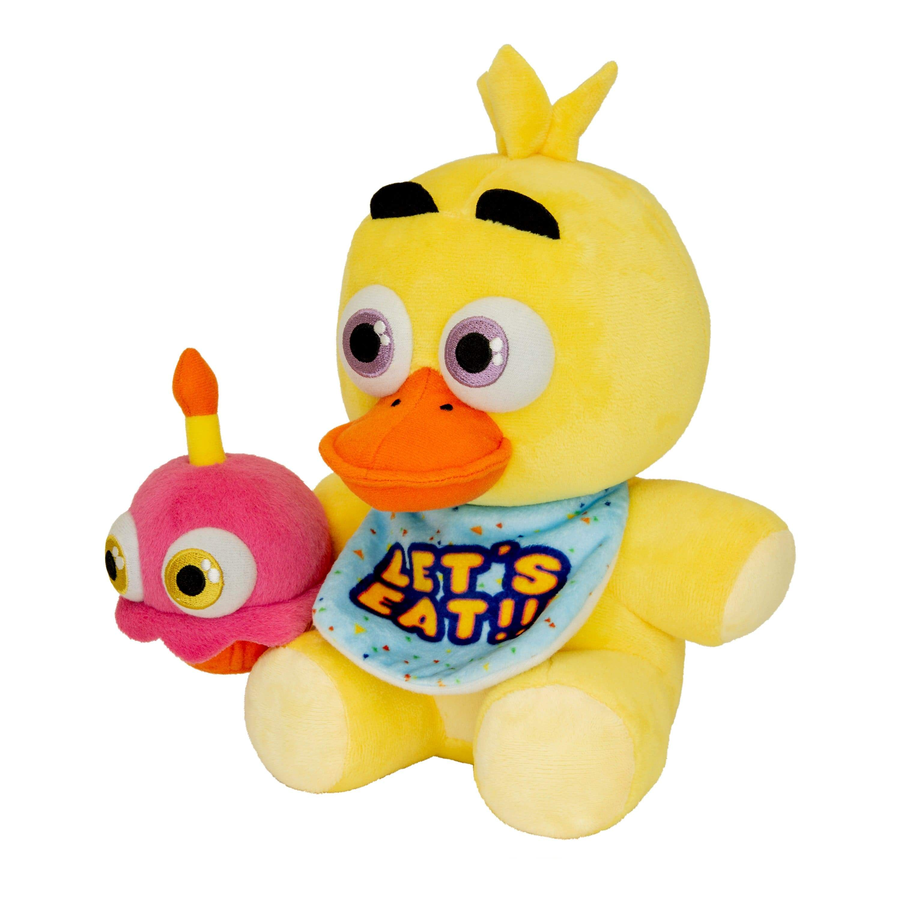
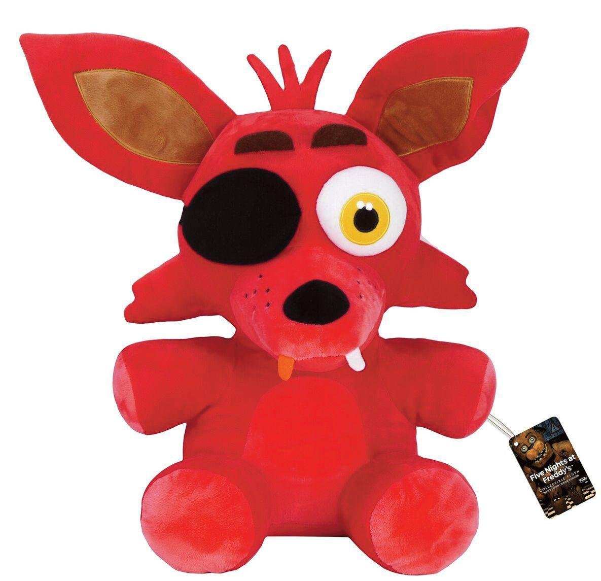

Use of a mark in Bootstrap
Use Ctrl + p to open the Print dialog box.
Bonnie the Rabbit, also known as Bonnie, is one of the four original animatronics of Freddy Fazbear's Pizza and a major antagonist in the Five Nights at Freddy's series. Bonnie is an animatronic rabbit and the guitarist in Freddy's band, positioned at the left side of the stage.
Freddy Fazbear is one of the four original animatronics of Freddy Fazbear's Pizza and the titular antagonist of the Five Nights at Freddy's series. Freddy is an animatronic bear and the mascot of the original Freddy Fazbear's Pizza. He takes the role as lead singer of the band, standing in the center of the stage.
Chica the Chicken, also known as Chica, is one of the four original animatronics of Freddy Fazbear's Pizza and a major antagonist in the Five Nights at Freddy's series. Chica is an animatronic chicken and the backup singer in Freddy's band, positioned at the right side of the stage.
Foxy the Pirate, also known as Foxy, is one of the four original animatronics of Freddy Fazbear's Pizza and a major antagonist in the Five Nights at Freddy's series. Foxy is a discontinued animatronic pirate fox entertainer. He resides at his own separate stage in the pizzeria.
Column Right
Robotic Engineer
Afton had a strange fascination with Spring Bonnie, a suit which depicted a large androgynous yellow rabbit. He would wear it inside the pizzeria, via using a hand crank to move the inner metal parts of the suit away from his face, chest, arms and legs.
Night Guard
Michael Afton (also known as Mike Schmidt and Eggs Benedict) is the main protagonist of the Five Nights at Freddy's game series, first appearing with his real name in Sister Location. He is one of the sons of William Afton, and older brother of Crying Child and Elizabeth Afton.
About Appearance GalleryBirthday Boy
The Crying Child is a timid child with a seemingly paralyzing fear or phobia of many things, including animatronics. He undergoes bullying and teasing by his Older Brother, Michael Afton, who is always seen wearing a Foxy mask.
no face
His older pre-rebuilt form, known as Withered Bonnie, has a damaged appearance, which is due to an attempted retrofit of the older animatronics that took place before they got scrapped for the newer models, such as Toy Bonnie.[6] Like Withered Freddy, Withered Bonnie also has two buttons on his chest. His face has been gutted, with most of it being removed, revealing his endoskeleton mechanisms and dangling wires. His lower jaw remains, featuring more teeth than the original Bonnie possessed in the first game, although the jaw itself still appears to be functional.
big head
As Withered Freddy, he is the older, withered incarnation[7][8] and the first engineered model. He, along with the four other older animatronics, have all fallen into severe disrepair, and he is replaced by his newer counterpart for the "improved" Freddy Fazbear's Pizza, Toy Freddy. It is explained that he has gone through an attempted retrofit, but was left unfinished after the management chose Toy Freddy instead (much like the other original animatronics being replaced by their respective counterparts).
The First
As her older, withered form, Withered Chica, she, along with the four other older animatronics, have all fallen into severe disrepair. She is replaced by her newer counterpart (Toy Chica) for the "improved" Freddy Fazbear's Pizza due to an attempted retrofit and subsequent abandonment of the older model in favor of Toy Chica, according to Phone Guy on Night 2.[4] For a start, the feminine features have been toned down, and she appears more androgynous as a result, to contrast her more with Toy Chica.
flashlight
As Withered Foxy (Foxy's withered form), he, along with the four other older animatronics, have all fallen into severe disrepair, and he is replaced by his newer counterpart for the "improved" Freddy Fazbear's Pizza due to an attempted retrofit of the older animatronics that took place before they got scrapped for the newer models, such as Mangle.[4] Withered Foxy's suit has become even more tattered and the fur on his left ear has come off completely.